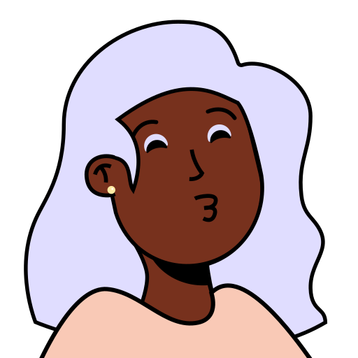
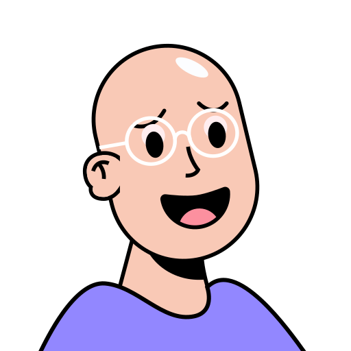
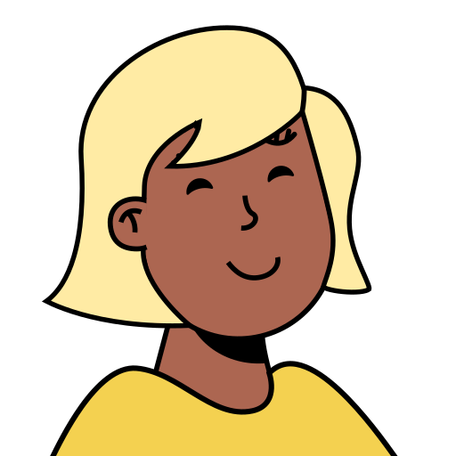
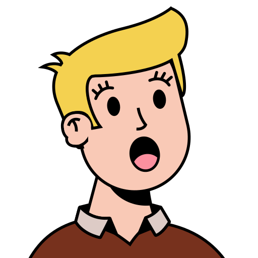
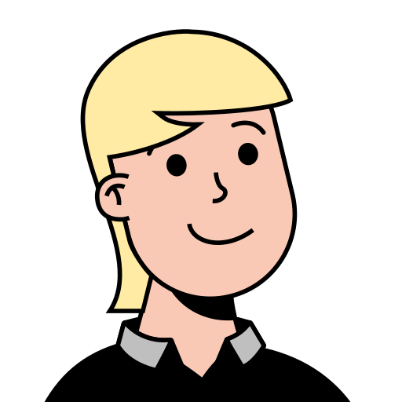

Valentina Ríos
Fundadora de Parche Dev y desarrolladora web
Aprendió a programar en un curso nocturno. Creó Parche Dev para que nadie tuviera que aprender solo.

Fundadora de Parche Dev y desarrolladora web
Aprendió a programar en un curso nocturno. Creó Parche Dev para que nadie tuviera que aprender solo.

Desarrollador frontend
Lleva ocho años haciendo sitios web y cree que un buen HTML resuelve la mitad de una interfaz.

Analista de datos
Convierte hojas de cálculo caóticas en bases de datos ordenadas. Para ella, SQL es un superpoder.
Especialista en accesibilidad web
Revisa sitios para que los usen personas con lector de pantalla, con teclado o con baja visión.

Desarrollador backend
Automatiza todo lo que se repite más de dos veces. En su taller harás un bot paso a paso.

Desarrollador full stack
Publicó su primer sitio con HTML puro y hoy despliega en la nube. Su charla es en inglés.
